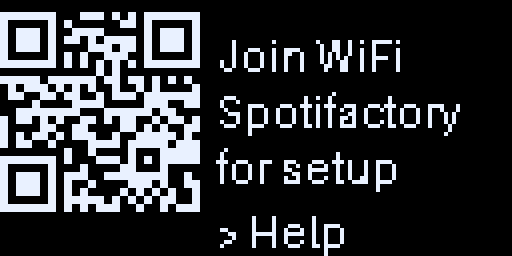
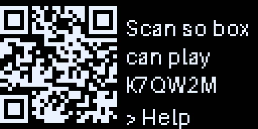
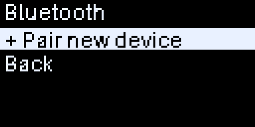
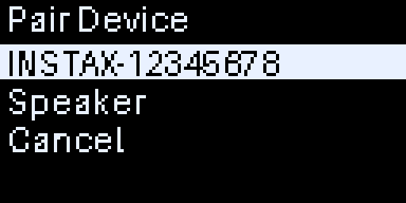
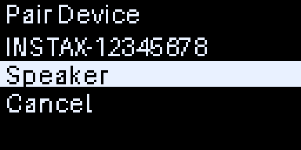
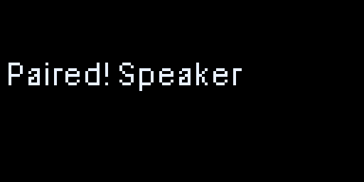

1Join your WiFi

Or scan this to join the setup WiFi
- Plug the box in. After the logo it shows Join WiFi Spotifactory for setup.
- Scan the screen's code (or the one above) with your phone camera and tap Join. Or pick WiFi Spotifactory in your phone's settings. No password.
- A setup page opens. If not, browse to
10.42.0.1. - Pick your WiFi, type its password, tap Connect. Wait for WiFi connected!
Didn't connect? The Spotifactory WiFi comes back within a minute. Join it again to see why.
2Connect Spotify first code
- The box shows a code with Scan Code next to it.
- Scan it and open the link.
- Log in to Spotify and tap Agree.
- The box says Spotify connected! and shows the second code.
This lets the box see what's playing, start albums and pick speakers.
3Let the box play second code

- The box shows Scan so box can play and a short code.
- Scan it to open spotify.com/pair, or type the code there on any device.
- Use the same Spotify account as step 2, and approve.
- The box says Box can play now!
Codes last a few minutes. A new one appears by itself.
4Pair the printer


- Turn the printer on. Close the Instax app on your phone.
- Press Menu, choose Bluetooth, then + Pair new device.
- After about 10 seconds, choose INSTAX-… from the list.
- The box says Printer ready! Check with Menu › Film Left.
5Pair a Bluetooth speaker


- Put the speaker in pairing mode (usually hold its Bluetooth button until the light flashes).
- Press Menu, choose Bluetooth, then + Pair new device.
- Choose your speaker. The box says Paired!
It reconnects whenever the speaker is on. WiFi speakers (Sonos, Chromecast, AirPlay): Menu › Choose Speaker.
6Make your first photo
- Play an album in the Spotify app on Spotifactory.
- Press Menu, choose Print Album, then Yes.
- Stick an NFC tag on the back of the photo.
- When the box says Place tag to write, stand the photo on it until Album ready!
From then on, stand the photo on the box to play the album.